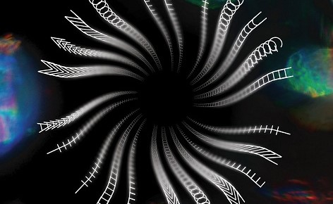

MUSIC
Donato Dozzy returns to Tresor Records with new EP, 124
Donato Dozzy has a new EP coming on Tresor Records. The four-track EP, titled 124, is due on November 5th.

EVENTS
Fabric completes 22nd birthday lineup
Josey Rebelle, Benji B, Terry Francis amongst additions to the 39-hour party.

EVENTS
Rakastella Festival returns to Miami with Ben UFO, Jayda G, Eris Drew, Octo Octa, DJ Harvey and more
The oceanside event is slated for December 4th at Virginia Key Beach Park.
REVIEWS

Mano Le Tough - At The Moment
Mano Le Tough dusts off his guitar for an eccentric LP of pop songs and house tracks.
TECH
Arturia announces Ensoniq SQ80 clone
The French synth experts have cloned a digital classic
LISTS
The Sound of Trip-Hop, Past and Present
Massive Attack’s 1991 album Blue Lines is considered the origin point of the genre


MORE NEWS
-

Ibiza clubs get the green light but few will reopen
Of the super clubs, only Amnesia and DC-10 have confirmed their reopening so far.
-

Technics announces new SL-1210G turntable
The new player is aimed at audiophiles though also maintains some of the features 1210 users will be familiar with.
-
Autechre to reissue classic albums LP5 and Chiastic Slide on vinyl
Coming via Warp, it's the first time either LP has been reissued on wax since the late '90s.
MOST READ
-
MUSIC
Donato Dozzy returns to Tresor Records with new EP, 124
-
EVENTS
Fabric completes 22nd birthday lineup
-
TECH
Arturia announces Ensoniq SQ80 clone
-
TECH
Technics announces new SL-1210G turntable
-
LISTS
The Sound of Trip-Hop, Past and Present